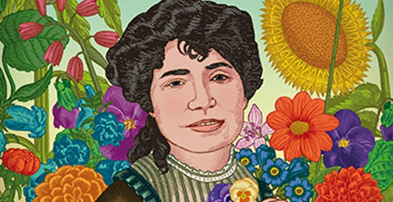

Pobre alma sola!, no te entristezcas...
¡Pobre alma sola!, no te entristezcas,
deja que pasen, deja que lleguen
la primavera y el triste otoño,
ora el estío y ora las nieves;
que no tan sólo para ti corren
horas y meses;
todo contigo, seres y mundos
de prisa marchan, todo envejece;
que hoy, mañana, antes y ahora,
lo mismo siempre,
hombres y frutos, plantas y flores,
vienen y vanse, nacen y mueren.
Cuando te apene lo que atrás dejas,
recuerda siempre
que es más dichoso quien de la vida
mayor espacio corrido tiene.